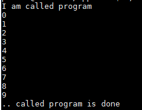
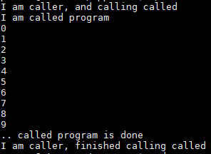
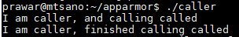

This document is prepared while I was a teaching assistant for Operating Systems. We wanted to do soemthing about the security feature that is available in Linux. Thus Apparmor was the final conclusion that we agreed upon. This document provides a brief introduction to this utility and hands-on examples on how to get started. Appropriate references will be cited as necessary as I did not develop any aspect of Apparmor.
Apparmor is a mandatory access control that confines the program to a limited set of resources. If you are familiar with the Access Control List (ACL) feature in linux, it confines user based on the permission type assigned to each user. However, using Apparmor, the program is confined to the set of resources (mostly system calls) and this is same for all the users regardless of their permission type. We will present a brief introduction to the ACL in one of the section below.
Apparmor is available in linux kernel, and the confinement definition for each program is defined in a file called profile for each of the program binary. In these profiles are the rules that a program can and cannot perform certain actions. Based on the mode of Apparmor profiles for each program, the action attempted by the program binary is either just reported log files or the action is prohibited as well as reported. We will see this in later section. The content upto this point are derived from (this link).
Mandatory Access Control (MAC) and Discretionary Access Control (DAC) are the access control modes.
MAC works by permission level, ie each user has a permission level assignmend. S/he has access to the resources that are not above her/his permission level.
In DAC, the owner of the resource specifies roles and permission for other users.
Apparmor is installed and loaded by default in Ubuntu since Ubuntu 8.04 LTS. Inorder to see the status of apparmor, you can do the following command in your terminal screen.
sudo aa-status
If some the modules are already loaded by default, you should see the list of loaded profiles as shown below:
47 profiles are loaded.
45 profiles are in enforce mode.
/sbin/dhclient
/snap/core/8268/usr/lib/snapd/snap-confine
/snap/core/8268/usr/lib/snapd/snap-confine//mount-namespace-capture-helper
/snap/core/8592/usr/lib/snapd/snap-confine
/snap/core/8592/usr/lib/snapd/snap-confine//mount-namespace-capture-helper
/snap/core/8689/usr/lib/snapd/snap-confine
/snap/core/8689/usr/lib/snapd/snap-confine//mount-namespace-capture-helper
/snap/core/8935/usr/lib/snapd/snap-confine
/snap/core/8935/usr/lib/snapd/snap-confine//mount-namespace-capture-helper
/usr/bin/evince
/usr/bin/evince-previewer
/usr/bin/evince-previewer//sanitized_helper
/usr/bin/evince-thumbnailer
/usr/bin/evince//sanitized_helper
/usr/bin/man
/usr/lib/NetworkManager/nm-dhcp-client.action
/usr/lib/NetworkManager/nm-dhcp-helper
/usr/lib/connman/scripts/dhclient-script
/usr/lib/cups/backend/cups-pdf
/usr/lib/lightdm/lightdm-guest-session
/usr/lib/lightdm/lightdm-guest-session//chromium
/usr/lib/snapd/snap-confine
/usr/lib/snapd/snap-confine//mount-namespace-capture-helper
/usr/sbin/cups-browsed
/usr/sbin/cupsd
/usr/sbin/cupsd//third_party
/usr/sbin/ippusbxd
/usr/sbin/ntpd
/usr/sbin/tcpdump
docker-default
libreoffice-senddoc
libreoffice-soffice//gpg
libreoffice-xpdfimport
man_filter
man_groff
snap-update-ns.core
snap-update-ns.gnome-calculator
snap-update-ns.gnome-characters
snap-update-ns.gnome-logs
snap-update-ns.gnome-system-monitor
snap.core.hook.configure
snap.gnome-calculator.gnome-calculator
snap.gnome-characters.gnome-characters
snap.gnome-logs.gnome-logs
snap.gnome-system-monitor.gnome-system-monitor
2 profiles are in complain mode.
libreoffice-oopslash
libreoffice-soffice
4 processes have profiles defined.
4 processes are in enforce mode.
/sbin/dhclient (2439)
/usr/sbin/cups-browsed (25161)
/usr/sbin/cupsd (25160)
/usr/sbin/cupsd (25285)
0 processes are in complain mode.
0 processes are unconfined but have a profile defined.
If you look closely at the loaded profiles, you can see two modes of loaded profiles. These modes are:
- Enforce Mode:
- Complain Mode:
Profiles in Complain Mode only log the restricted action in the log files. They do not necesssarily restrict the program from perfoming the operation.
Foe the profiles in Enforce mode, the action is prohibited altogether.
Let us create two programs. The first program, named called will just print a set of number from 0 - 9 in a sequence. The second program, called, caller will make a use of system() function to execution of called.
Following is the code for called.cpp. Compile as g++ called.cpp -o called
#include <iostream>
using namespace std;
int main()
{
cout<<"I am called program"<<endl;
for(int i=0;i<10;i++)
cout<<i<<endl;
cout<<".. called program is done"<<endl;
}
Following is the code for caller.cpp. Compile as g++ caller.cpp -o caller
#include <iostream>
using namespace std;
int main()
{
cout<<"I am caller program"<<endl;
system("./called");
cout<<".. caller program is done"<<endl;
}
Individual runs of the program looks something like following.
For called

For caller

In our code presented above, the binary or the executable file caller uses system() to make a call to called binary. Situation might arise when we may not want to allow such execution of system() function call. Thus here we will create our profile that will prevent the binary caller from doing so.
Before creating profiles, we have to install some utilities that will allow us to create profiles. Thus perform the following commands in your machine for this purpose.
sudo apt-get update
sudo apt-get install apparmor-utils
After the installation is complete, we can move forward. Since we want to create a profile for caller, let us run aa-genprofutility on this binary. You can do following:
sudo aa-genprof caller
While you run this command, it will show the following output in your terminal screem:
prawar@mtsano:~/apparmor$ sudo aa-genprof caller
Writing updated profile for /home/prawar/apparmor/caller.
Setting /home/prawar/apparmor/caller to complain mode.
Before you begin, you may wish to check if a
profile already exists for the application you
wish to confine. See the following wiki page for
more information:
http://wiki.apparmor.net/index.php/Profiles
Profiling: /home/prawar/apparmor/caller
Please start the application to be profiled in
another window and exercise its functionality now.
Once completed, select the "Scan" option below in
order to scan the system logs for AppArmor events.
For each AppArmor event, you will be given the
opportunity to choose whether the access should be
allowed or denied.
[(S)can system log for AppArmor events] / (F)inish
This essentially says that you can open a new terminal and run the binary. Apparmor utility will log all the "AppArmor event" as appropriate. So, follow the following steps now:
- Leave this terminal as is.
- Open a new terminal in your ssh client (your local terminal or Mobaxterm or putty etc)
- Log into echo and then to your assigned Odroid
- Run caller binary
- Once you are done executing, head back to the previous terminal.
The events will be logged by the Apparmor. Once you are back to the original terminal, hit [S] in your keyboard. Now this will scan the log file to see if any apparmor events are made. Our system call is one of the apparmor event.
Once you press [S], you will be asked a question on how you want to proceed.
Reading log entries from /var/log/syslog.
Updating AppArmor profiles in /etc/apparmor.d.
Profile: /home/prawar/apparmor/caller
Execute: /bin/dash
Severity: unknown
(I)nherit / (C)hild / (N)amed / (U)nconfined / (X) ix On / (D)eny / Abo(r)t / (F)inish
In our case, we want to (D)eny the call to the system() call. How do we know the above presented is a question for system() call? A system() call executes a shell and thus in our case it is
/bin/dash as mentioned in "Execute" section.
You can go ahead and press the [D].
The profile will be save in /etc/apparmor.d folder, and it should have the name as the full path of the executable binay itself with (/) replaced by (.).
Now that we have created profiles, the profile will be implemented in enforce mode by default. You can test this by again listing all the profiles using aa-status.
At this point, if you run the program caller, it will not be able to execute the system() function, and thus you will only see the output statements from the caller itself. It looks like following:

If you want to change the policy to complain mode while allowing the execution of the system() function call, you can do the following command:
sudo aa-complain caller
The above command assumes you are still inside the same folder as caller.
If you run caller now, the binary called will still be executed as follows:
The log file is /var/log/syslog. Before I ran the policy in complain mode after I had changed the policy to complain, following is the status of the log file using
tail /var/log/syslog
root@mtsano:/home/prawar/apparmor# tail /var/log/syslog
Apr 14 12:53:48 mtsano kernel: [7259769.513060] audit: type=1400 audit(1586886828.965:355): apparmor="STATUS" operation="profile_replace" profile="unconfined" name="/home/prawar/apparmor/caller" pid=12991 comm="apparmor_parser"
Apr 14 12:53:48 mtsano prawar: GenProf: 05be3ae03cea36d89916378d46f6c4ce
Apr 14 12:53:51 mtsano prawar: GenProf: 0ab918df5fec749500df638f1bb7db39
Apr 14 12:53:53 mtsano kernel: [7259774.183328] audit: type=1400 audit(1586886833.633:356): apparmor="STATUS" operation="profile_replace" profile="unconfined" name="/home/prawar/apparmor/caller" pid=13009 comm="apparmor_parser"
Apr 14 12:55:01 mtsano cron[1373]: sendmail: fatal: open /etc/postfix/main.cf: No such file or directory
Apr 14 12:55:01 mtsano CRON[13035]: (root) CMD (command -v debian-sa1 > /dev/null && debian-sa1 1 1)
Apr 14 12:55:01 mtsano CRON[13036]: (landscape) CMD (( /opt/canonical/landscape/scripts/update_alerts.sh; /opt/canonical/landscape/scripts/landscape_profiles.sh; /opt/canonical/landscape/scripts/process_alerts.sh ))
Apr 14 12:55:01 mtsano postfix/sendmail[13041]: fatal: open /etc/postfix/main.cf: No such file or directory
Apr 14 12:55:01 mtsano CRON[13032]: (landscape) MAIL (mailed 225 bytes of output but got status 0x004b from MTA#012)
Apr 14 12:57:43 mtsano kernel: [7260004.333716] audit: type=1400 audit(1586887063.787:357): apparmor="STATUS" operation="profile_replace" profile="unconfined" name="/home/prawar/apparmor/caller" pid=13107 comm="apparmor_parser"
However, after I run again in complain mode, following is the output of the same command mentioned above, which indicates the operation was allowed:
root@mtsano:/home/prawar/apparmor# tail /var/log/syslog
Apr 14 12:58:57 mtsano kernel: [7260078.304579] audit: type=1400 audit(1586887137.759:358): apparmor="ALLOWED" operation="file_mmap" profile="/home/prawar/apparmor/caller//null-/bin/dash" name="/bin/dash" pid=13129 comm="sh" requested_mask="rm" denied_mask="rm" fsuid=0 ouid=0
Apr 14 12:58:57 mtsano kernel: [7260078.304589] audit: type=1400 audit(1586887137.759:359): apparmor="ALLOWED" operation="file_mmap" profile="/home/prawar/apparmor/caller//null-/bin/dash" name="/lib/x86_64-linux-gnu/ld-2.27.so" pid=13129 comm="sh" requested_mask="rm" denied_mask="rm" fsuid=0 ouid=0
Apr 14 12:58:57 mtsano kernel: [7260078.304787] audit: type=1400 audit(1586887137.759:360): apparmor="ALLOWED" operation="open" profile="/home/prawar/apparmor/caller//null-/bin/dash" name="/etc/ld.so.cache" pid=13129 comm="sh" requested_mask="r" denied_mask="r" fsuid=0 ouid=0
Apr 14 12:58:57 mtsano kernel: [7260078.304808] audit: type=1400 audit(1586887137.759:361): apparmor="ALLOWED" operation="open" profile="/home/prawar/apparmor/caller//null-/bin/dash" name="/lib/x86_64-linux-gnu/libc-2.27.so" pid=13129 comm="sh" requested_mask="r" denied_mask="r" fsuid=0 ouid=0
Apr 14 12:58:57 mtsano kernel: [7260078.304856] audit: type=1400 audit(1586887137.759:362): apparmor="ALLOWED" operation="file_mmap" profile="/home/prawar/apparmor/caller//null-/bin/dash" name="/lib/x86_64-linux-gnu/libc-2.27.so" pid=13129 comm="sh" requested_mask="rm" denied_mask="rm" fsuid=0 ouid=0
Apr 14 12:58:57 mtsano kernel: [7260078.305904] audit: type=1400 audit(1586887137.759:363): apparmor="ALLOWED" operation="exec" profile="/home/prawar/apparmor/caller//null-/bin/dash" name="/home/prawar/apparmor/called" pid=13130 comm="sh" requested_mask="x" denied_mask="x" fsuid=0 ouid=1004 target="/home/prawar/apparmor/caller//null-/bin/dash//null-/home/prawar/apparmor/called"
Apr 14 12:58:57 mtsano kernel: [7260078.306024] audit: type=1400 audit(1586887137.759:364): apparmor="ALLOWED" operation="file_mmap" profile="/home/prawar/apparmor/caller//null-/bin/dash//null-/home/prawar/apparmor/called" name="/home/prawar/apparmor/called" pid=13130 comm="called" requested_mask="rm" denied_mask="rm" fsuid=0 ouid=1004
Apr 14 12:58:57 mtsano kernel: [7260078.306060] audit: type=1400 audit(1586887137.759:365): apparmor="ALLOWED" operation="file_mmap" profile="/home/prawar/apparmor/caller//null-/bin/dash//null-/home/prawar/apparmor/called" name="/lib/x86_64-linux-gnu/ld-2.27.so" pid=13130 comm="called" requested_mask="rm" denied_mask="rm" fsuid=0 ouid=0
Apr 14 12:58:57 mtsano kernel: [7260078.306317] audit: type=1400 audit(1586887137.763:366): apparmor="ALLOWED" operation="open" profile="/home/prawar/apparmor/caller//null-/bin/dash//null-/home/prawar/apparmor/called" name="/etc/ld.so.cache" pid=13130 comm="called" requested_mask="r" denied_mask="r" fsuid=0 ouid=0
Apr 14 12:58:57 mtsano kernel: [7260078.306371] audit: type=1400 audit(1586887137.763:367): apparmor="ALLOWED" operation="open" profile="/home/prawar/apparmor/caller//null-/bin/dash//null-/home/prawar/apparmor/called" name="/usr/lib/x86_64-linux-gnu/libstdc++.so.6.0.25" pid=13130 comm="called" requested_mask="r" denied_mask="r" fsuid=0 ouid=0